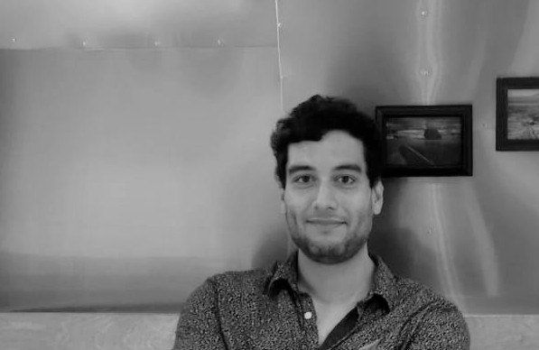
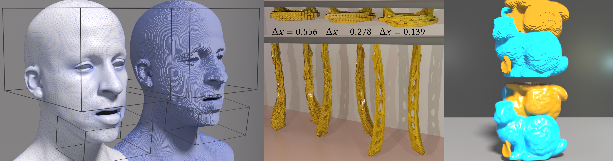
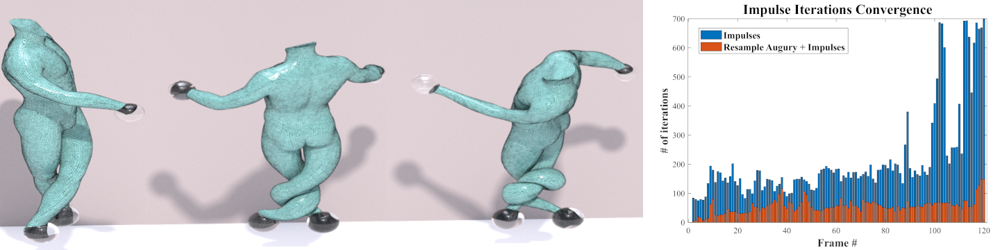
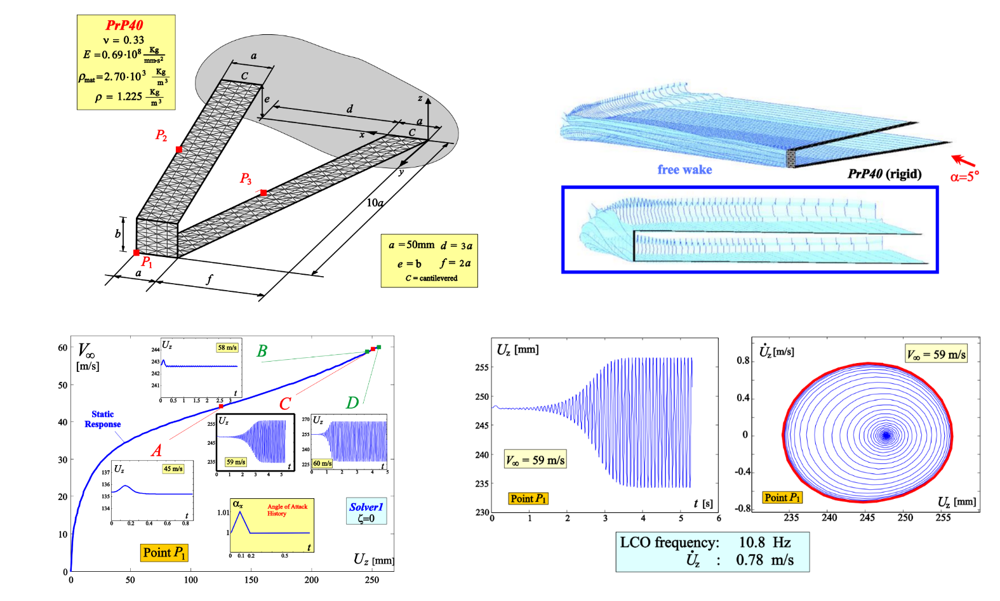

PhD. Aerospace Engineering
email: ae.alan.marquez@gmail.com
Crriculum Vitae
About Myself

Interest: Aerospace Engineer
Numerical methods for engineering problems, Aeroelasticity, Dynamical Analysis, CFD, Solid and Structure Mechanics
Education
Education
University of California los Angeles (UCLA), Phd Aerospace Engineering 2021
UCLA, Masters of Science Aerospace Engineering 2015
San Diego State University (SDSU), Bachelors of Science Aerospace Engineering 2013
Work Experience
Work Experience
Post-Doc Researcher under David Hyde, Vanderbilt University Department of Computer Science 2022-2023 Investigation of the use of the material point method (MPM) for sharp interfaces. Expand the utility and applicability of MPM to real-world problems. Physical interfacial problems from physical science and engineering.
Software Engineer under Theodore Gast, Jixie Effects 2022 Develop Material Point Method software and material models for multiphysics simulations..
Graduate Student Researcherunder Joseph Teran, UCLA Department of Mathematics 2020-2021 Investigation of the use of the material point method (MPM) for fluid-structure simulations. Support of the in house codebase, develop and implement a wide variety of C++ functions including level sets, fast sweeping algorithm, hybrid Lagrangian/Eulerian methods for fluid simulation, surface tension for MPM, conservative transfers for MPM and hybrid method for collisions using finite elements and MPM.
Graduate Student Researcher under Oddvar Bendiksen (retired) UCLA Department of Mechanical and Aerospace Engineering 2016- 2017 Investigation: Aeroelasticity benchmark work for the next generation of high transonic and supersonic aircraft. This included CAD modeling for a wing tunnel model. Validating finite elements to appropriate model the wing tunnel model in the experiment, coding and comparing the data to experimental results..
Aerospace Engineering Intern under James Lewis California Institute of Technology, Jet Propulsion Laboratory 2015-2016 Support the Mars Oxygen IRSU Experiment (MOXIE). Focusing on the flow processes and instrumentation systems. Handled CAD modeling using SOLIDWORKS, equipment maintenance, inventory, and 3D printing of the MOXIE prototype.
Assistant Researcher under Luciano Demasi SDSU Department of Aerospace Engineering, Laboratory 2011-2013Investigation: Nonlinear Analysis of Prandtl Plane Joined Wings. Finite Element Modeling and Analysis of static nonlinear joined wing configurations. MATLAB coding of a dynamic aeroelastic instability (flutter) solver for non-planar high subsonic flow using the doublet lattice method. Analyzed diverse wing configurations under different flight conditions to obtain the properties desired for given test cases.
Teaching Experience
Teaching Experience
UCLA Teaching Assistant under Dr. Toohey Damian, “Flight Mechanics” 2015 - 201
UCLA Teaching Assistant under Dr. Oddvar Bendiksen, “Aeroelastic Effects on Structures” 2016
UCLA Teaching Assistant under Dr. Oddvar Bendiksen, “Preliminary Aircraft Designs” 2015
SDSU Teaching Assistant under Dr. Luciano Demasi, “Statics” 2012
Skills
Skills
C++
MATLAB
Python
FORTRAN
Rust
Git
Numerical methods for materia simulations
CFD
FEM
MPM
FV
FD
Solid Mechanics
Structural Dynamics
Thermal Analysis
Fluid-Structure Interactions
Dynamics Analysis
Reduced Order Modeling
Prototyping
SOLIDWORKS
FEMAP
Ansys
NASTRAN
Pro/ENGINEER
Adobe Photoshop
Adobe Premiere
Microsoft 365
Houdini
English
Spanish
Publications
Publications

1. "A Robust Grid-Based Meshing Algorithm for Embedding Self-Intersecting Surfaces"
,Steven W. Gagniere, Yushan Han, Yizhou Chen, David A. B. Hyde, Alan
Marquez-Razon , Joseph Teran, Ronald Fedkiw. Computer Graphics Forum Vol 43
Issue 1 [https://doi.org/10.1111/cgf.14986](https://doi.org/10.1111/cgf.14986) 2023

2. “A Linear and Angular Momentum Conserving Hybrid Particle/Grid Iteration for
Volumetric Elastic Contact” Alan Marquez Razon , Yizhou Chen, Yushan Han, Steven
Gagniere, Michael Tupek, Joseph Teran. Proceedings of the ACM on Computer
Graphics and Interactive Techniques Vol 6 Issue 3 Pages 1-25 ACM
[https://doi.org/10.1145/3606924](https://doi.org/10.1145/3606924) 2023
3. "A Momentum-Conserving Implicit Material Point Method for Surface Energies with
Spatial Gradients", J Chen, V Kala, A Marquez-Razon, E Gueidon, DAB Hyde, J Teran.
ACM Transactions on Graphics (TOG) Vol 40 Issue 4 Pages 1-16 ACM
[https://doi.org/10.1145/3450626.3459874](https://doi.org/10.1145/3450626.3459874) 2021
4. “Particle Grid Hybrid Methods for Multi-Material Dynamics” Marquez Razon, Alan .
University of California, Los Angeles ProQuest Dissertations Publishing,
[https://escholarship.org/uc/item/4ct3d43f](https://escholarship.org/uc/item/4ct3d43f) 2021
5. "An implicit updated lagrangian formulation for liquids with large surface energy", David
Hyde, Steven Gagniere, Alan Marquez-Razon, Joseph Teran ACM Transactions on
Graphics (TOG) 39 (6), 1-13, [https://doi.org/10.1145/3414685.3417845](https://doi.org/10.1145/3414685.3417845) 2020
6. "A Hybrid Lagrangian/Eulerian Collocated Advection and Projection Method for
FluidSimulation”, Steven Gagniere, David Hyde, Alan Marquez-Razon , Chenfanfu
Jiang, Ziheng Ge, Xuchen Han, Qi Guo, Joseph Teran, Symposium on Computer
Animation (SCA) , [https://doi.org/10.1111/cgf.14096]( https://doi.org/10.1111/cgf.14096) 2020

7. "Phenomenology of nonlinear aeroelastic responses of highly deformable joined wings",
Rauno Cavallaro, Andrea Iannelli, Luciano Demasi and Alan Marquez Razon .
Advances in Aircraft and Spacecraft Science, An International Journal. DOI:
[https://doi.org/10.12989/aas.2015.2.2.125](https://doi.org/10.12989/aas.2015.2.2.125) 2015
8. "Phenomenology of Nonlinear Aeroelastic Responses of Highly Deformable
Joined-wings Configurations", Rauno Cavallaro, Andrea Iannelli, Luciano Demasi and
Alan Marquez Razon, AIAA Journal. [https://doi.org/10.2514/6.2014-1199](https://doi.org/10.2514/6.2014-1199) 2014
9. “Postcritical analysis of PrandtlPlane joined-wing configurations” Luciano Demasi,
Rauno Cavallaro, Alan Márquez Razón. AIAA journal Vol 51 Issue 1 pages 161-177
American Institute of Aeronautics and Astronautics Redirect 2013
Simulations
Simulations
1. Volumetric Mesh Embedidng for physic based simulations
2. Elastic volumetric mesh collisions
3. Strong Surface Tension Simulations
4. Surface Tension Water Simulations
5. Surface Tension fluid simulations with thermal effects